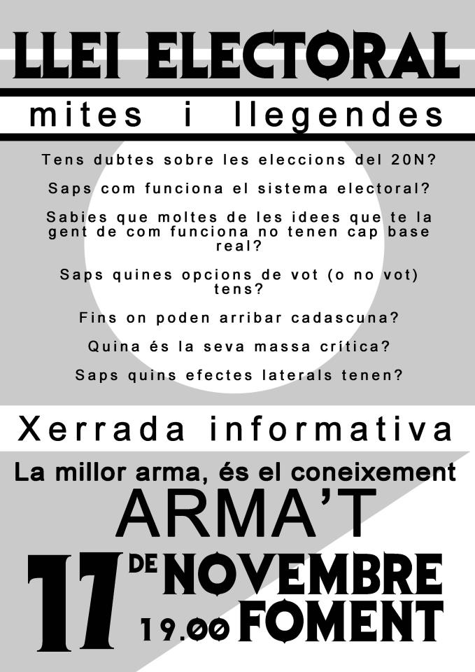

Articles by vokimon
Entendiendo la regla de D'Hondt

La Regla de D'Hondt se usa para el reparto de representantes en nuestro sistema electoral. Este artículo la explica de una forma diferente y gráfica, que nos permite dejar de verla como una caja negra y sacar muchas conclusiones.
La clave de todo es, en vez de centrarnos en el método de cálculo, centrarnos en su propósito: encontrar un precio en votos por el que repartir los escaños sin que sobre ni falte ninguno.
Gráficamente se puede entender donde está el beneficio a los mayoritarios, pero también se puede delimitar el alcance de ese beneficio y saber en qué casos se nota más y en qué casos menos. También permite saber la masa crítica necesaria para que pasen ciertos cambios. Y sobretodo sirve para fundamentar el descarte de muchos mitos y ideas preconcebidas.
Por ejemplo, que D'Hondt sería el objetivo a tumbar para tener un sistema más proporcional, cuando la distorsión principal viene de las circumscripciones. O que las coaliciones se ven muy beneficiadas por D'Hondt, cuando el beneficio es irrisorio, medio escaño, por grande que sea la coalición resultante.
-
Parlament20152015-02-03 00:00
Veguerias, el timo de la estampita

Una pregunta: ¿Quién representa mejor los intereses de una persona que votó al PP en Barcelona? ¿Una candidata de la CUP de Barcelona o una candidata del PP de Tarragona? (Cambia partidos y províncias, hasta que te chirríe.)
Algunas de las propuestas que se han ido haciendo de la ley electoral catalana, propone cambiar la circumscripción de la província a la veguería. ¿La razón expuesta? Una forma de acercar la gente a su electorado. ¡Precioso!
-
Generales20112011-11-16 00:09
Xerrada: Llei electoral, mites i llegendes.
Aquest dijous 17 de Novembre al Foment Cultural i Artístic de Sant Joan Despí farem una xerrada sobre el sistema electoral, les diferents opcions de vot y no vot, i les seves possibles conseqüències.
-
Generales20112011-11-15 04:41
20N: Opciones de voto (o no voto)

Explicamos el efecto de todas las opciones en la jornada electoral del 20N. Tanto las opciones de voto, como las de no voto. Las simbólicas y las pragmáticas. Y explicamos algunas de las candidaturas menos conocidas.
-
Generales20112011-11-15 04:14
20N: Llei electoral actual
De la ley electoral hem extret el que ens afecta en aquestes eleccions com a part de la circunscripció de Barcelona.
-
Generales20112011-11-15 01:54
20N: Mitos y leyendas sobre el sistema electoral

Esta página resume el trabajo que hemos hecho en la acampada intentando averiguar que había de cierto o de falso en los diferentes rumores que nos habían llegado de como funciona el sistema electoral.
Tags
- D'Hondt (2)
- Coaliciones (2)
- Circumscripciones (1)
- Parlament (3)
- Europeas (3)
- Generales (5)
- Charlas (2)
- Legislación (1)
Categories
- Europeas2014 (3)
- Fundamentos (1)
- Generales2011 (5)
- Parlament2012 (1)
- Parlament2015 (2)